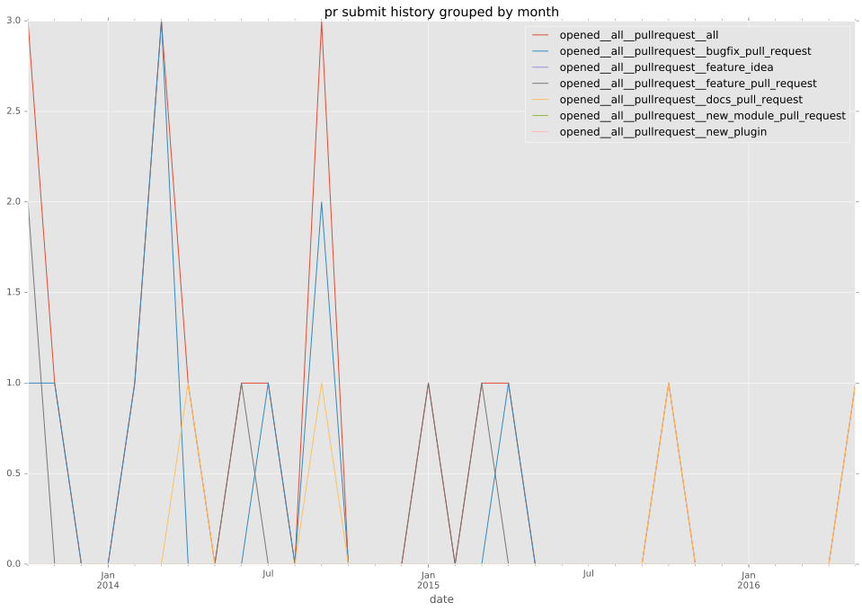
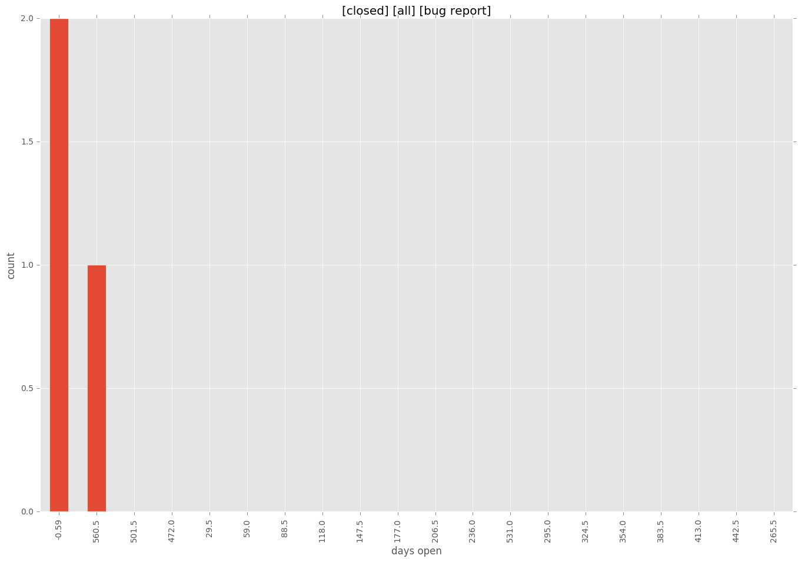

authors
- bennojoy
maintainers
- bennojoy
- supertom
contributors
- bennojoy : 44 commits
- mpdehaan : 27 commits
- Hypermanzer : 12 commits
- richtier : 7 commits
- bcoca : 6 commits
- abadger : 6 commits
- nitzmahone : 4 commits
- cgar : 3 commits
- keithhassen : 2 commits
- jctanner : 2 commits
- sivel : 1 commits
- pborreli : 1 commits
- ciupicri : 1 commits
total issue counts
feature pull request: 5
docs report: 1
pullrequest: 20
docs pull request: 4
bugfix pull request: 11
issue: 4
bug report: 3
issue history
pullrequest history

days open by issue type
bugfix pull request
count: 16
std: 1.70171482139
min: 0
max: 5
median: 0.0
mean: 0.6875
all
count: 32
std: 109.833924301
min: 0
max: 590
median: 0.0
mean: 36.15625
pullrequest
count: 0
std: nan
min: nan
max: nan
median: nan
mean: nan
docs pull request
count: 5
std: 53.9583172458
min: 0
max: 101
median: 8.0
mean: 42.0
docs report
count: 1
std: nan
min: 106
max: 106
median: 106.0
mean: 106.0
feature pull request
count: 7
std: 67.9698812851
min: 2
max: 188
median: 10.0
mean: 34.2857142857
issue
count: 0
std: nan
min: nan
max: nan
median: nan
mean: nan
bug report
count: 3
std: 340.636658822
min: 0
max: 590
median: 0.0
mean: 196.666666667
closures grouped by total days open
